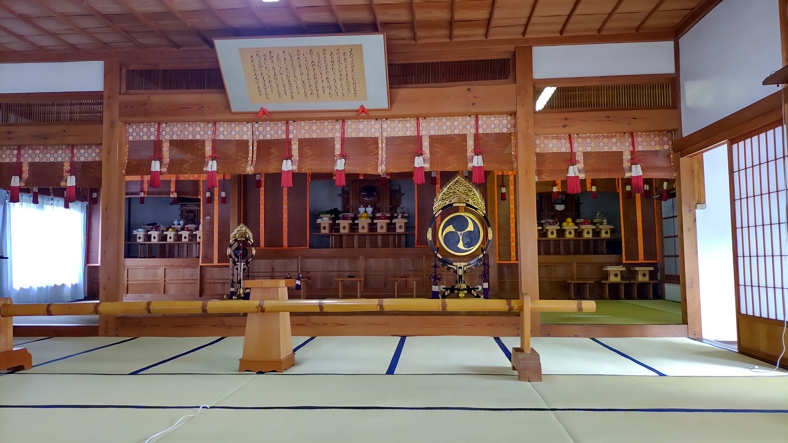

結婚できない男の特徴と解決方法【天理教の教え】
トップ > 記事一覧 > 結婚できない男の特徴と解決方法
2022-06-17 by 内田裕之
こんにちは、うっちゃんです。
こんな悩みを抱えていませんか？
- 結婚をしたいけど相手がいない
- 自分を受けいれてくれる女性が見つからない
- デートしても次につながらず、音信不通になってしまう
この記事ではそんな悩みを解決します。
この記事でわかること
- 結婚したくてもできない男の特徴3選
- 気になる女性へのアプローチ方法
- 自分磨きの方法
この記事が幸福な人生のきっかけになると嬉しく思います。
相談内容

今回は30代男性から悩み相談を受けました。
私は結婚をしたいけど相手が見つからず、彼女ができないのが悩みです。
コロナ禍で出会いのイベントが激減し、婚活が難しいと感じています。
アプリに登録して月10万円も課金してたくさんの女性と会いました。
中には気になる女性もでき、何度か食事に行ったこともあります。
ただ、私が家族問題を抱えているため交際前に分かってもらおうと話しますが、そうすると次のデートに来てもらえません。
私のことを理解してくれる女性と結婚したいのですが、どうしたらよいでしょうか？
結婚したくてもできない男の特徴

結婚に向けて積極的に行動しているのは素晴らしいですね。
家に帰ったら「おかえり」と言ってくれる家族がいることはとても幸せなことです。
ただ、結婚したくてもできないということは何かしら問題があると思います。
ここでは結婚したくてもできない男の特徴3選を紹介します。
女性の理想像が高すぎる
まず女性に多くを求めすぎていないでしょうか？
例えば外見、スタイル、おっぱい、性格、年収など条件をかけているかもしれません。
女性と会っている時に自分のリアクションが小さくなったり、つまらなさそうな雰囲気を出していることも。。
当然、相手の女性は「私といてもつまらないのね」「それならもっと幸せにしてくれる人に会いに行くわ」と考えるので、次のデートにつながりません。
まずは相手に多くを求めていないか振り返りましょう。
自分を受け入れてほしいと思っている
付き合う前から家族トラブルの話をするのは、結婚前に告白して別れたらお互いに時間の無駄になると思います。
しかし、数回会っただけの人に家族トラブルを教えられ、「私も頑張るから一緒に乗り越えよう」なんて言ってもらえるでしょうか？
私は難しいと思います。
なぜならもっと格好良くて、面倒なトラブルのない男性がいるかもしれないからです。
人は「いまさらもったいないな・・」という気持ちを起こさないとトラブルを乗り越えようとは思いません。
女性にも覚悟を持ってもらうには交際して愛を深めたり、時間をかける必要があります。
また、天理教の8つのほこりには「ほしい」があります。
ほしいは、自分を省みないでむやみにほしがる様子を指します。
自分を受け入れてほしい気持ちは分かりますが、女性も同じ思いがあることを意識しましょう。
男なら胸を張って、女性を受け入れる心の広さを持つのが大切です。
自分が正しいと思っている
何人もの女性と出会って交際にたどりつかないということは、何かしら自分に問題があります。
それでも自分を受け入れてほしいと考えるのは、ほこりの「こうまん」に当たります。
こうまんとは、自分は正しい、人よりも偉いとうぬぼれる様子を指します。
相手の反応は自分のコミュニケーションの結果です。
次回につながらないということは、自分を変える必要があります。
かくいう私もモテない男でしたので大変努力をしました。
父に「お前はモテないから35歳になったら見合いを用意してやるからな」と言われて腹が立ち、20代で結婚すると決意しました。
しかし、婚活パーティでひとつも連絡先がもらえないのが当たり前。
ファッションを本で学び、ユニクロできれいめな服をそろえました。
散髪は1回5000円もする美容室に通いました。
投資を本で学んで実践してお金をたくさん貯めました。
婚活パーティやアプリで活動を続け、2018年にようやく彼女ができ、2020年に結婚しました。
結婚してからも夫婦喧嘩で学ぶことがたくさんあり、自分を変えることがしばしばあります。
柔軟性を持ったしなやかな男になりたいものです。
天理教の教えからアドバイス
ここからは具体的に何をすればよいか、天理教の教えから考えていきます。
自分を知る
まずは相手の反応は自分のコミュニケーションの成果であると気づきましょう。
自分が原因で相手の反応が決まるのです。
原因＝ネガティブなきっかけ、とは違います。
例えば誕生日にプレゼントをすれば相手は喜びますよね。
これも私が原因で相手を喜ばせたという反応を得ています。
自分のコミュニケーションが相手に影響しているので、まずは自分がどんな働きかけを無意識にしているのか気づく必要があります。
これが自分を知るということです。
天理教の神殿には鏡が置かれていますが、これは自分を知る大切さを説いています。
ほこりを掃除する
人間の心には8つのほこりが積もると言われています。
ほこりは人生を苦しめる利己的で身勝手な心づかいです。
経典の第七章では以下のように書かれています。
人の幸福は、その境遇に在るのではなく、人生の苦楽は、外見によって定まるのではない。
すべては、銘々の心の持ち方によって決まる。
心の持ち方を正して、日々喜び勇んで生活すのが、信心の道である。
（参考：天理教経典）
親神様の教えをほおきとして、ほこりを掃除しましょう。
心を常に磨く
人は一度決心しても、つい時間が立つとまわりの意見に流されたり、今の自分のままでいようとする思考が働きます。
幸福な人生を歩むためには、たえず自分の心を磨きましょう。
天理教では人々が陽気に暮らすための教えを教会でお伝えしています。
もっと天理教を学びたい、人生をより良くしたいと思ったらぜひ教会に行ってみませんか？
お会いできるのを楽しみにお待ちしています。
天理教の教会を見る